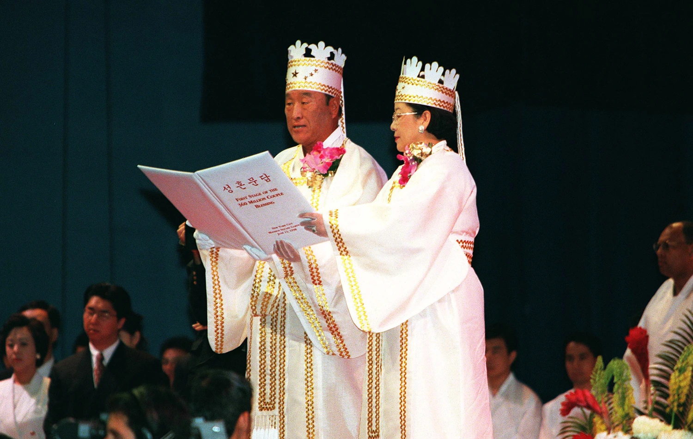
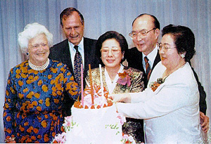

Home
The modern Unification Church is not one monolithic organization, but an extremely complex conglomerate of loosely related interconnected enterprises that seek to accomplish different goals ... [it] is thus a curious mix of bureaucracy and charismatic leadership, as if Jesus were still alive and leading a first-century Christian movement that had enormouse size and wealth.
- Strange gods : the great American cult scare, 1981, p.36-37

Founded as The Holy Spirit Association for the Unification of World Christianity (HSA-UWC), the primary belief of the colloquially-known ‘Unification Church’ is the Divine Principle--the idea that the Church's founder Sun Myung Moon and his wife Hak Ja Han Moon are the ‘True Parents’, their children are without sin, and couples who receive the Blessing (marriage within the Church) become members of the true family. Consequently, religious activity within the Church largely centers around the fulfilment of this Divine Principle, often manifesting as marriage, child-bearing, and intense proselytization by which eventually, all of humanity may be united under The Family, fulfilling both God and His creation.
The primary source of Church teachings is Divine Principle (1957), a collection of Moon's teachings since 1945. However, the Church has historically derived from the charismatic leadership of Moon, resulting in ongoing revelation which has persisted into Hak Ja Han Moon's tenure as Church leader following Rev. Moon's death in 2012. The main points of scripture are as follows:
Centered around marriage, prospective couples must be active members of the Church (and work for it full-time) for at least 3 years. Living in celibacy, they cultivate a 'sibling' in isolation before eventually marrying and having children. Marriage is traditionally done on mass, with Moon himself pairing couples on the spot through divine inspiration. The inner network of meaning within the community is therefore primarily focused on the institution of marriage and its capacity to bring about world peace.
Though based on Christianity, Unificationism largely forgoes the traditional mind/ body divide to deeply embed itself in the physical world: the perfection of the Divine Principle. The Church also aggressively involves itself with the ongoing political milieu: Moon saw the Cold War as a battleground for the battle between good and evil which can only be tipped towards good through Unification. To this end, the Church has proliferated its broadly right-wing, anti-communist message, attaching itself to a variety of media ventures (most notably The Washington Times) and political movements (from Watergate to perhaps most notoriously the assasination of Japanese PM Shinzo Abe). Through these works, the Unification Church straddles the line between religion and corporation, enforcing Unification conceptions of sacred and profane well beyond Church borders.
Unification is also heavily syncretized/ incorporated, borrowing many of its elements--most notably its attitude towards women and ideas of divine harmony--from Buddhism and Confucianism. Moreover, divine revelation from other religious figures like Mohammed and the Buddha is central to asserting Moon as the 'true' messiah who has succeeded where others have failed.
George H.W. Bush and Barabara Bush photographed with Hak Ja Han Moon and (center) and her associates.
